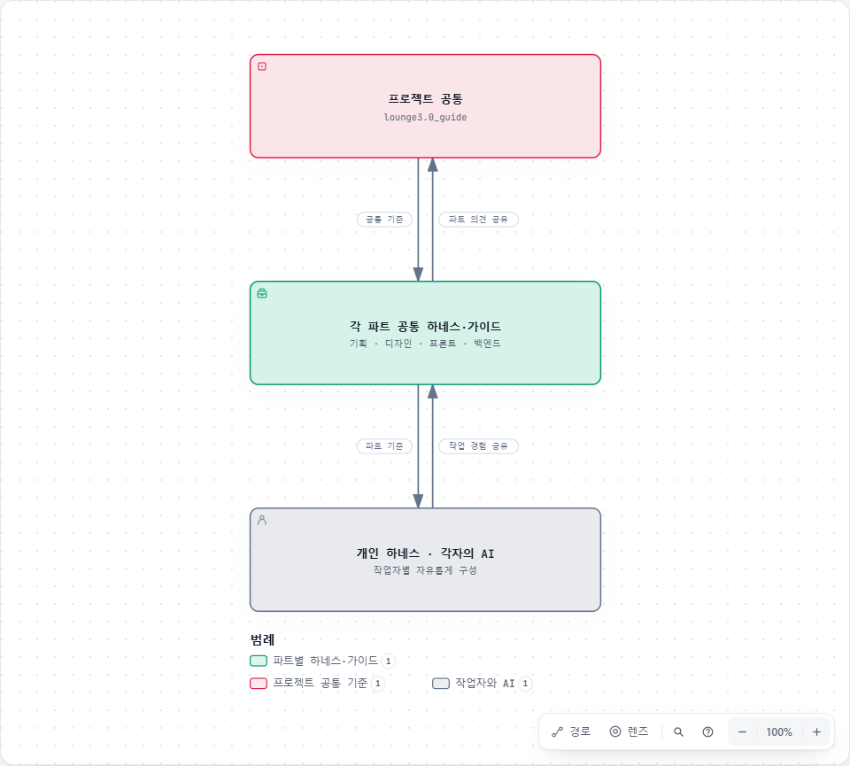

01 / PROJECT
프로젝트
과업·구조·자료 위치를 파악하고 공통 정보를 관리합니다.
- 앱·웹 범위와 파트별 연결
- 원본 위치·확인 상태·정보 갱신 기준
AI가 자료를 확인하고 작업·검증·결과 정리를 진행하도록 돕는 공통 가이드입니다. 모든 파트가 같은 문서 구조, 공용 스킬과 작성 형식을 사용합니다.
과업은 Flutter 기반 하이브리드 앱 리뉴얼과 회원·결제 등을 포함한 반응형 웹 구축입니다. 세부 정책과 기능 범위는 해당 원본에서 확인합니다.
프로젝트 공통 → 각 파트 공통 → 개인 하네스
프로젝트 공통은 공용 스킬·검증 기준·공통 정보를, 각 파트 PL은 별도 저장소의 하네스와 가이드를 관리합니다. 작업자는 각자의 AI와 개인 하네스를 사용하면서 두 공통 기준을 함께 확인합니다.
기준과 작업 경험은 서로 주고받습니다. 화살표는 양방향 관계를, 애니메이션은 위에서 아래로 흐르는 기준을 나타냅니다.

과업·전체 구조·각 파트의 관계를 확인합니다.
실제 파트 저장소의 AGENTS.md를 읽습니다.
필요한 기획·디자인·계약·소스를 확인합니다.
변경·검증·결정과 추가 확인 사항을 기록합니다.
처음 참여하면 프로젝트 지침과 프로젝트 기본 정보부터 읽습니다. 작은 수정이나 작업 재개는 필요한 파트로 바로 이동하면 됩니다.
파트별 하네스와 상세 가이드는 각 PL이 별도 저장소에서 관리합니다. 아래 저장소로 이동해 해당 파트의 지침을 확인합니다. 이 공통 저장소의 파트 폴더는 안내와 기본 구조 예시입니다.
과업·구조·자료 위치를 파악하고 공통 정보를 관리합니다.
사용자·업무 목표를 정책과 검수 가능한 요구사항으로 연결합니다.
기획의 흐름과 상태를 화면·공통 UI로 구체화합니다.
브라우저·앱 WebView 화면을 구현하고 Native와의 경계를 확인합니다.
업무 규칙을 API·데이터·외부 연동과 연결합니다.
한 파트의 변경을 관련 계약·작업·검수에 연결합니다.
AI에는 공통 가이드의 AGENTS.md와 실제 작업 위치를 함께 전달합니다. 아래는 AI에 작업을 요청하는 예시입니다. 꺾쇠 안의 내용은 이번 작업에 맞춰 채웁니다.
공통 가이드: <공통 가이드의 AGENTS.md 경로>
실제 작업 위치: <이번 작업의 대상 경로>
기준 자료: <파일·버전·화면 또는 슬라이드 범위>
공유 기록: <결정·작업 기록 위치 / 미정>
요청: <대상 기능과 기획 검토·설계·구현 등 이번 범위>
처음 시작하는 작업이면 프로젝트 지침과 기본 정보를 먼저 읽어줘.
그다음 해당 파트의 지침과 작업 대상의 AGENTS.md를 확인하고,
이번 작업에 필요한 기획·디자인·계약·소스만 읽어줘.
확인한 사실·제안·미정을 구분하고, 변경과 실제 검증 결과,
추가 확인 사항과 다른 파트의 영향을 남겨줘.다른 파트는 작업 위치와 요청 범위를 바꾸면 됩니다. 가이드를 작업 폴더 밖에 두면 AI가 자동으로 읽는다고 가정하지 않습니다. 새 대화·재개 시에도 시작 경로와 작업 범위를 전달하세요.
기획서와 향후 Redmine의 업무 기록은 각 원본에서 관리합니다. 이 가이드는 AI의 작업 방법과 작성 기준을 제공합니다. 파트 저장소는 위 안내에서 확인합니다. 개별 업무 자료 위치와 미정 도구 연동은 확인된 범위에서 안내합니다.
공통 정보는 짧게 유지하고, 자세한 내용은 해당 파트와 원본에 연결합니다.
먼저 파트 PL과 논의합니다. 파트에서만 필요한 내용은 파트 공통에 남기고, 여러 파트에 필요한 내용은 공통 관리자와 조율해 lounge3.0_guide에 반영합니다. 각 PL이 파트 공통을 유지하며, 공통 관리자는 전달받은 저장소 주소와 전체 공통 기준을 관리합니다.
루트 AGENTS.md에는 시작 경로와 최소 규칙을, 파트 AGENTS.md에는 자료 선택과 작업 지침을 둡니다. 파트별 내용과 구성은 담당 PL이 관리합니다. 사람용 HTML은 공통 템플릿을 사용하고, 실제 문서가 생기면 파트 AGENTS.md와 사람용 목차에서 연결합니다.
승인된 목표 기준, 실제 확인한 구현, 검토할 제안, 아직 결정·확인하지 못한 항목을 나눕니다. 결정 확정과 구현·검증 완료도 따로 기록합니다.
정책·화면·API·데이터·Native·일정·검수 중 관련된 영향을 확인하고, 근거와 필요한 판단을 전달합니다. 기존 팀 기록 위치가 있으면 그곳을 원본으로 사용합니다.